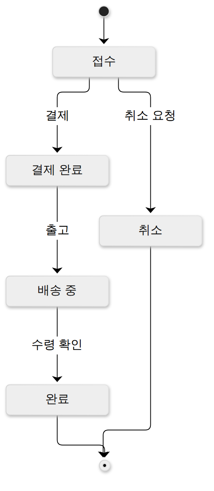

D004 · 모델링 기법 — DFD·자료 사전·럼바우
오늘의 목표: 요구사항을 그림과 명세로 옮기는 분석 모델링 기법이에요. 현업에선 UML·ERD 정도만 쓰지만, 시험은 UML 이전 시대의 구조적 분석 도구(DFD·자료 사전)와 객체지향 분석 기법(럼바우 등)의 기호와 짝을 물어요. 개념은 어렵지 않으니 기호 모양·기호 뜻·“누가 무엇” 짝을 정확히 외우는 데 집중할게요.
- 구조적 분석(기능·데이터 흐름 중심)과 객체지향 분석(객체·관계 중심)의 차이와 대표 도구를 구별한다
- DFD 4요소(프로세스·자료 흐름·자료 저장소·단말)의 기호와 특징을 구별한다
- 자료 사전 기호
=+[ | ]{ }( )** **의 의미를 구별한다(특히{ }반복 vs( )생략) - 구조적 분석 도구 DFD·DD·소단위 명세서·ERD·STD의 역할을 구별한다
- 럼바우 OMT 3모델(객체→동적→기능)과 부치·제이콥슨·코드-요든·워프스-브록 기법을 구별한다
1. 큰 그림 — 구조적 분석 vs 객체지향 분석
분석 모델링은 “요구사항을 무엇을 중심으로 쪼개서 그리느냐”에 따라 두 갈래로 나뉘어요.
시스템을 “데이터가 흘러가며 변환되는 과정”으로 보고, 큰 기능을 작은 기능으로 하향식 분해
1970~80년대 드마르코(DeMarco)·요든(Yourdon) 등
데이터(속성)와 행위(연산)를 객체로 묶어(캡슐화) 객체 사이 관계·상호작용으로 표현
1990년대 럼바우·부치·제이콥슨 → UML로 통합
2. 구조적 분석 도구 5종
| 도구 | 무엇을 표현 | 키워드 |
|---|---|---|
| DFD 자료 흐름도 | 데이터가 프로세스를 거치며 어떻게 변환·이동하는지 | 자료 흐름, 버블 차트, 단계적 분할 |
| DD 자료 사전 | DFD에 나온 자료(흐름·저장소)의 정의 | 메타데이터, 기호 = + [|] {} () ** |
| Mini-Spec 소단위 명세서 | DFD 최하위 프로세스의 처리 절차 | 구조적 언어, 의사결정표, 의사결정 트리 |
| ERD 개체 관계도 | 데이터(개체) 사이의 관계 | 개체·속성·관계 |
| STD 상태 전이도 | 이벤트에 따른 시스템 상태 변화 | 상태, 이벤트, 전이 |
다섯 도구는 서로 짝을 이뤄요. DFD가 “어떤 데이터가 어디로 흐르나”를 그리면, 그 데이터 이름의 정의는 DD에, 맨 아래 프로세스의 처리 로직은 Mini-Spec에 적어요. DFD가 못 그리는 시간·제어는 STD가, 데이터 사이 관계는 ERD가 맡아요.
3. DFD (Data Flow Diagram, 자료 흐름도)
DFD는 자료의 흐름과 변환만 그리는 그림이에요. 프로세스를 버블(원)로 그려서 버블 차트라고도 해요. 구성요소는 딱 네 가지예요.
| 요소 | 기호 | 의미 |
|---|---|---|
| 프로세스 (Process) | 원(버블) | 입력 자료를 출력 자료로 변환하는 처리. 이름은 “동사+목적어”(주문 접수) |
| 자료 흐름 (Data Flow) | 화살표 | 자료가 이동하는 경로. 화살표 위에 자료 이름 |
| 자료 저장소 (Data Store) | 평행선(두 줄) | 파일·DB처럼 자료가 머무는 곳 |
| 단말 (Terminator) | 사각형 | 시스템 바깥의 사람·조직·다른 시스템. 자료의 출발지·도착지 |
※ 표기법(드마르코·요든, 게인-사슨 등)에 따라 프로세스를 둥근 사각형으로 그리기도 해요. 시험은 드마르코·요든식 원 기준이에요.
작은 예시
단계적 분할 — 배경도에서 소단위 명세서까지
상위 프로세스 하나를 하위 DFD 한 장으로 풀어 내려가는 하향식 분할이에요. 이때 상위에서 들어오고 나가는 자료 흐름은 하위 DFD에서도 그대로 유지돼야 해요(균형, balancing). 한 장에 프로세스는 3~9개 정도가 권장이에요.
※ 레벨 번호는 교재마다 “배경도 = 0레벨”, “배경도 다음 장 = DFD 0” 등으로 조금씩 달라요. 시험에서는 “배경도 = 최상위(0레벨), 시스템 전체를 프로세스 하나로”만 확실히 알면 돼요.
- DFD는 제어 흐름·시간 순서·조건 분기·반복을 표현하지 않아요. “처리 순서를 명확히 보여 준다”는 틀린 선지. 시간·상태는 STD 몫이에요.
- 단말 = 사각형(원 아님), 저장소 = 평행선(삼각형·원통 아님)으로 기호를 바꿔 낸 선지가 나와요.
- 자료 사전·소단위 명세서는 DFD를 보조하는 별도 도구예요. DFD의 구성요소가 아니에요.
- 자료 흐름의 한쪽 끝은 반드시 프로세스예요. 단말→저장소, 저장소→저장소처럼 프로세스를 거치지 않는 흐름은 없어요.
4. 자료 사전 (DD, Data Dictionary)
DFD의 화살표·저장소에 붙은 자료 이름을 정의하는 사전이에요(“자료에 대한 자료” = 메타데이터). 개발자 눈으로 보면 정규식·BNF 비슷한 표기법이에요.
| 기호 | 의미 | 영어 | 읽는 법 |
|---|---|---|---|
= | 정의 | is composed of | ~로 구성된다 |
+ | 연결 | and | ~와 ~ |
[ a | b ] | 선택 | either / or | a 또는 b 중 하나 |
{ } | 반복 | iteration | 여러 번 나온다 |
( ) | 생략 가능 | optional | 있어도 되고 없어도 된다 |
** ** | 주석 | comment | 설명일 뿐 자료 아님 |
주문 = 주문번호 + 주문일자
+ {상품코드 + 수량}
+ (쿠폰코드)
+ [카드 | 계좌이체]
** 주문 한 건의 구성 **
주문번호 + 주문일자— 항상 둘 다 있다(연결){상품코드 + 수량}— 상품 줄이 여러 개 반복된다(주문 항목 리스트)(쿠폰코드)— 쿠폰은 없어도 된다(nullable)[카드 | 계좌이체]— 결제 수단은 둘 중 하나(enum)
{ } 반복코드 블록 { ... }이 루프 몸체처럼 여러 번 돈다고 연상( ) 생략문장 속 괄호 “(선택 사항)”처럼 빼도 되는 부분이라고 연상[ ]는 배열이 아니라 택일이에요(안의 |가 OR).{ }를 “선택”이나 “생략”으로, [ ]를 “반복”으로 바꾼 선지가 단골이에요. 프로그래밍 습관([ ]=배열=반복)대로 고르면 틀려요.5. 객체지향 분석 기법
럼바우 OMT (Object Modeling Technique) — 가장 많이 출제
럼바우(Rumbaugh) 등이 1991년 정리한 방법으로, 시스템을 세 가지 관점의 모델로 나눠 차례로 만들어요. 이후 UML의 주요 뿌리가 됐어요.
| 모델 | 다이어그램 | 무엇을 | 답하는 질문 |
|---|---|---|---|
| 객체 모델링 (정보 모델링) | 객체 다이어그램 | 객체·클래스, 속성·연산, 객체 간 관계(연관·집약·일반화). 가장 먼저, 가장 중요 | “무엇이 있나?” |
| 동적 모델링 | 상태 다이어그램 | 이벤트에 따른 상태 변화, 시간 흐름에 따른 제어 흐름 | “언제 어떻게 바뀌나?” |
| 기능 모델링 | DFD | 입력 자료가 처리되어 출력이 되는 자료 흐름·변환 | “무엇을 계산하나?” |
동적 모델의 상태 다이어그램은 실제로 이렇게 생겼어요(주문 객체의 상태 변화).

기능 모델은 앞의 3장에서 본 DFD 그대로예요. 즉 럼바우는 객체지향 기법이지만 기능 관점에서는 구조적 분석의 DFD를 빌려 써요. 그래서 “DFD = 구조적 분석 전용”이라고 단정하면 안 돼요.
- 동적 ↔ 기능의 다이어그램을 뒤바꾼 선지(동적 = DFD, 기능 = 상태도)가 가장 흔해요.
- “럼바우 분석 절차에 해당하지 않는 것”으로 정적·절차·블랙박스 모델링 같은 그럴듯한 이름이 나와요. 럼바우는 객체·동적·기능 셋뿐이에요.
- 순서 문제: 객체가 맨 앞. “기능 → 동적 → 객체” 같은 역순은 틀려요.
나머지 객체지향 분석 기법 — 이름과 키워드 짝
| 기법 | 시험용 짝 키워드 |
|---|---|
| 부치 (Booch) | 미시적·거시적 개발 프로세스를 모두 사용 |
| 제이콥슨 (Jacobson, OOSE) | 유스케이스(Use Case)를 강조 — 사용자 관점 시나리오 |
| 코드-요든 (Coad-Yourdon) | E-R 다이어그램으로 객체의 행위를 모델링 |
| 워프스-브록 (Wirfs-Brock) | 분석·설계 구분 없이 고객 명세서를 평가, 책임(Responsibility) 중심 설계 |
※ 부치의 “미시적·거시적 프로세스”, 코드-요든의 “E-R로 객체 행위 모델링”은 수험서 표준 서술이에요. 원 저작 대조는 못 했으니 시험용 짝 키워드로만 외우세요. 워프스-브록의 책임 주도 설계(Responsibility-Driven Design)는 객체가 맡는 책임과 협력(계약)을 중심으로 설계하는 방법이에요.
6. 시험 포인트 정리
- 구조적 = 기능·자료 흐름 중심 하향식 분해 / 객체지향 = 객체·관계 중심
- 구조적 도구: DFD · DD · Mini-Spec · ERD · STD. 최하위 프로세스 → Mini-Spec
- DFD 4요소 프흐저단: 원 · 화살표 · 평행선 · 사각형. 제어 흐름·시간 표현 없음, 최상위 = 배경도, 별명 버블 차트
- DD:
=정의 ·+연결 ·[|]선택 ·{}반복 ·()생략 ·**주석 - 럼바우 객동기: 객체-객체도, 동적-상태도, 기능-DFD
- 제이콥슨-유스케이스, 코드요든-E-R, 워프스브록-책임, 부치-미시·거시
확인 문제 (채점 완료 · 1/2)
- 럼바우 OMT의 기능 모델링에 주로 쓰는 것은?
정답·해설 (오답 기록됨)
① DFD. 럼바우 OMT 3모델은 객체(객체 다이어그램) → 동적(상태 다이어그램) → 기능(DFD)이에요. “기능 = 데이터가 어떻게 처리되나 = DFD”로 짝지어 외우세요. 객체 다이어그램은 객체 모델링 쪽이에요. - 자료 사전에서 { }의 의미는?
정답·해설
③ 반복. 자료 사전 기호:=정의,+연결,[ | ]선택,{ }반복,( )생략 가능,** **주석.
고른 뒤 답안 복사 → 디스코드 공부 채널에 붙여넣기 하면 돼요.
답장: 정처기 D004: 1)번호 2)번호